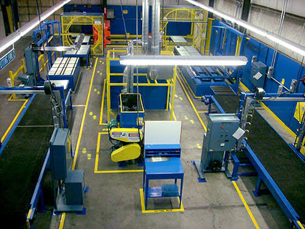

Lean Manufacturing y Eliminación de Desperdicios
El Lean Manufacturing (Manufactura Esbelta) es una filosofía de gestión operativa que busca maximizar el valor entregado al cliente final a través de la eliminación sistemática de los desperdicios, definidos como cualquier actividad que consume recursos pero no aporta valor al producto.
Pilares Fundamentales: 5S y Kaizen
Esta metodología se sostiene en técnicas como las 5S (Seiri-Clasificar, Seiton-Ordenar, Seiso-Limpiar, Seiketsu-Estandarizar, Shitsuke-Disciplina) para mantener áreas ordenadas, y el enfoque Kaizen, que promueve pequeños pero continuos cambios diarios enfocados en la excelencia operativa.
Los Desperdicios del Proceso
- Esperas: Operarios de brazos cruzados porque el molde de inyección no ha alcanzado la temperatura correcta.
- Movimientos innecesarios: Caminatas largas de los operarios para buscar herramientas de purga lejos de su estación.
- Defectos: Generación de piezas plásticas quemadas que deben ser descartadas o reprocesadas.
- Exceso de producción: Fabricar más baldes plásticos de los solicitados, saturando los pasillos de la fábrica.
Ejemplos de Mejora Esbelta
- Diseño de un panel de herramientas con sombras (Mapeo 5S) justo al lado de cada inyectora.
- Reducción del tamaño de lote para fabricar solo lo que el cliente demanda bajo un sistema Pull.
- Rediseño ergonómico de la estación de empaque para eliminar giros forzados del cuerpo del trabajador.

Matriz de Desperdicios Lean y Contramedidas
| Tipo de Desperdicio | Ejemplo en Fábrica de Plásticos | Solución Propuesta |
|---|---|---|
| Esperas | Retraso por enfriamiento prolongado del molde. | Optimizar el circuito de agua de refrigeración de las máquinas. |
| Movimientos | Buscar resinas en el extremo opuesto del taller. | Ubicar estaciones de alimentación de material cerca de las tolvas. |
| Defectos | Piezas deformadas al desmoldar. | Ajustar los tiempos de ciclo y automatizar el robot extractor de piezas. |
| Sobreproducción | Inyectar stock sin pedidos en firme por "aprovechar el montaje". | Implementar secuenciación ágil con tarjetas Kanban de producción. |